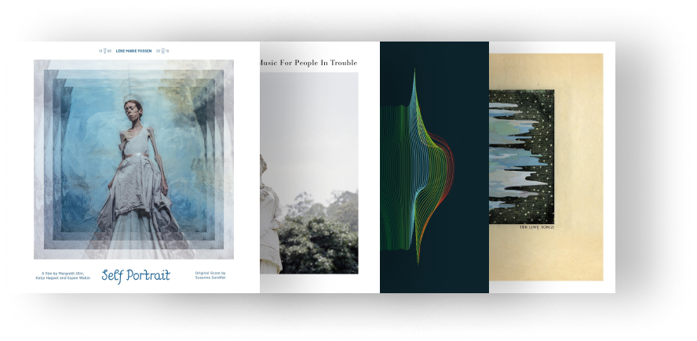

"They say help is near but no one here can feel our fear It's a minefield, us It'll never disappear"
Sussane Sundfør - Kamikaze

Some Hits
When the Lord
The song addresses introspective and personal themes, exploring the relationship between religion, spirituality and everyday life. The song questions the existence of a higher being and reflects on the complexities of faith and the search for meaning. Susanne Sundfør's distinctive voice and her musical style characterized by electronic and experimental elements combine to create a unique atmosphere on "When the Lord". The song showcases her ability to address deep issues in poetic and emotionally nuanced ways
Fade Away
The song "Fade Away" by Susanne Sundfør is a track from her album "Ten Love Songs", released in 2015. The song is an electronic ballad that deals with themes of love and desire, but also with a sense of melancholy and loss. In the song, Susanne Sundfør sings about longing and the idea that love can fade over time. The lyrics suggest a sense of nostalgia and the fear that deep feelings may gradually fade away.
White Foxes
The song "White Foxes" by Susanne Sundfør, found on her album "The Silicone Veil" released in 2012, is known for its poetic and evocative lyrics. Although interpretation of a song's lyrics can be subjective and vary from person to person, the song "White Foxes" appears to explore themes of transformation, escapism, and the search for a safe place in an ever-changing world. The "white foxes" metaphor in the song could represent the idea of following something strange and elusive in search of a refuge or a place where one can feel protected. The song can evoke a sense of mystery and adventure.

"The greatest danger is ourselves and losing our ability to hold civil conversations".